시그니처 향토음식
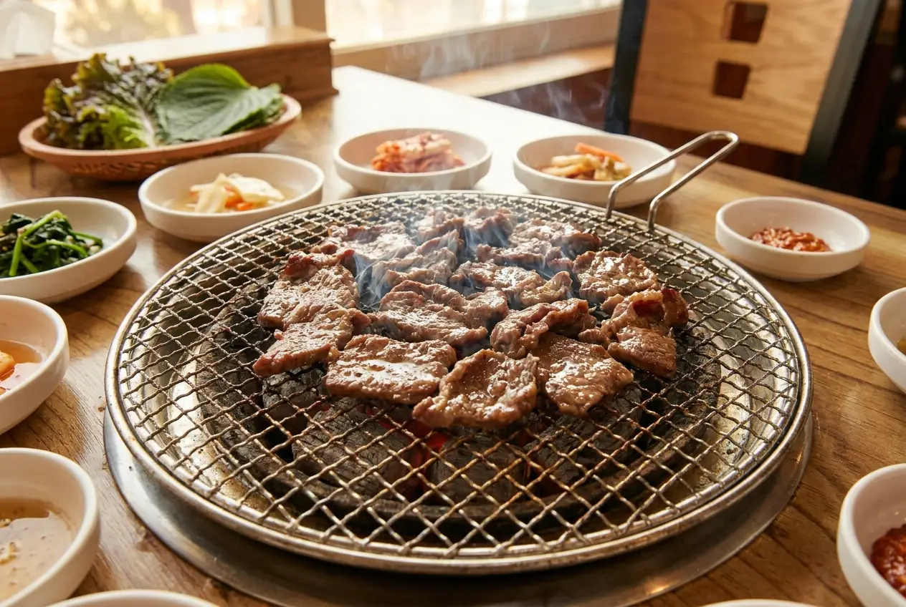
언양기와집불고기 정원 전경AI 그림
울산의 12미(味)와 정부 공인 백년가게, 현지 근로자들의 땀방울이 서린 해장 명가부터 길거리 간식까지 울산 미식의 모든 것을 한자리에 모았습니다.

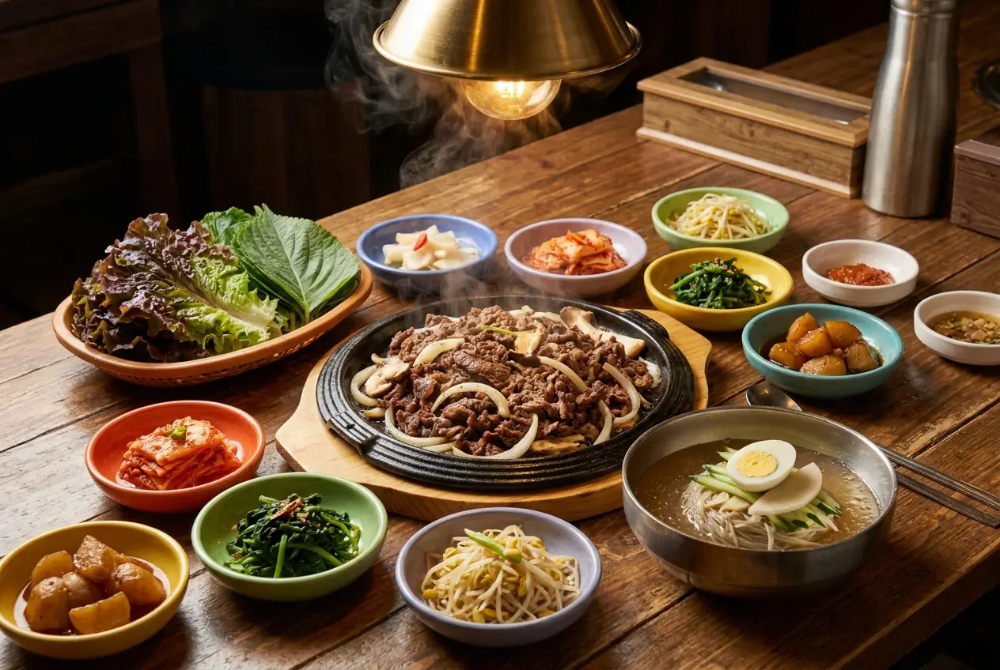
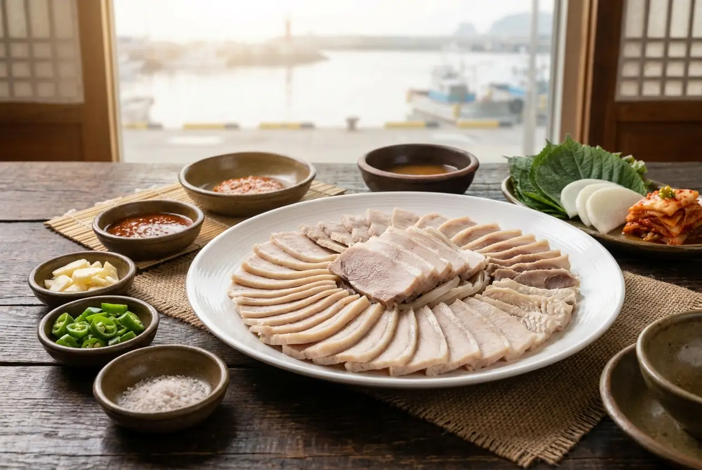
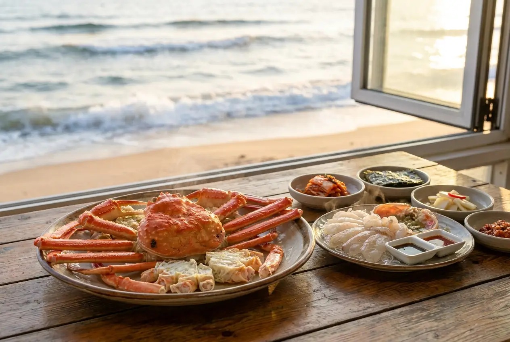
냉동을 일절 쓰지 않고 매일 정자항 바다에서 들어온 싱싱한 생물 생아구로만 끓여내는 칼칼한 생아구탕과 아구찜 전문점입니다. 욕쟁이 할머니의 투박하지만 깊은 전라도 손맛 정취를 그대로 느낄 수 있습니다.
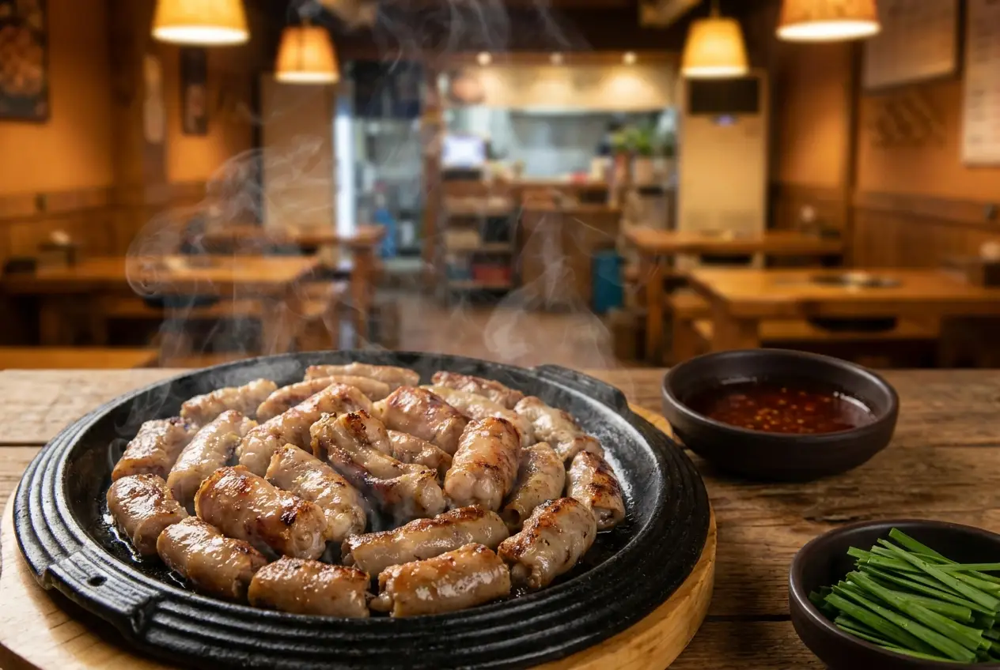
울주군 범서읍 선바위 인근의 조용하고 아늑한 풍경 속에서 정갈한 오리불고기를 맛볼 수 있는 곳입니다. 얇게 썬 신선한 오리고기에 매콤달콤한 비법 양념을 입혀 정성껏 볶아낸 불고기가 입맛을 사로잡습니다.
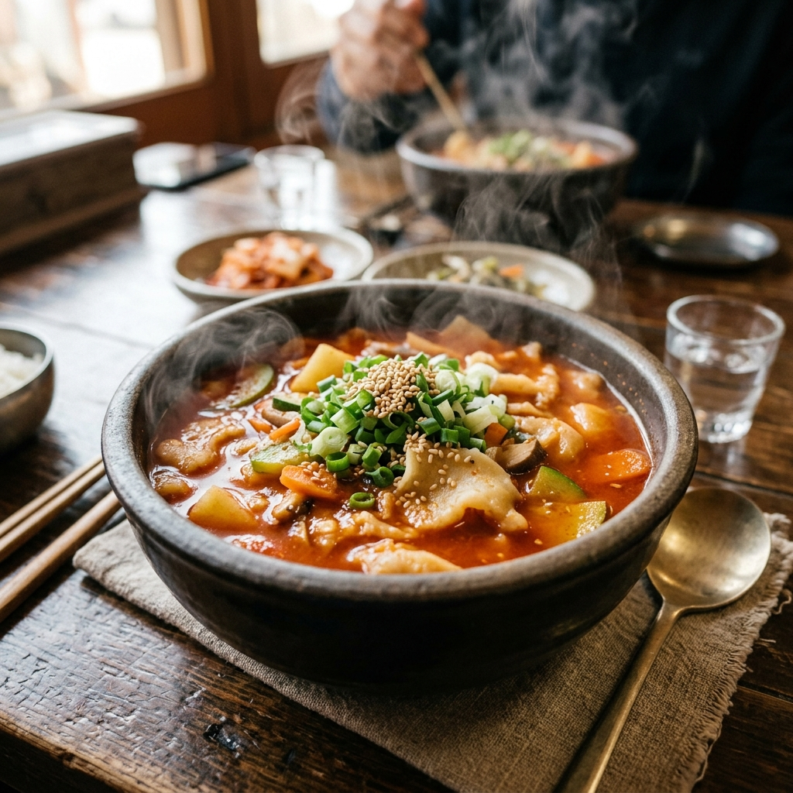
울산 율리 청량천과 저수지 옆에 위치하여 하루 종일 등산객과 미식가들로 대기줄이 끊이지 않는 울산의 레전드 맛집입니다. 매콤한 고추장 육수에 산초와 제피를 듬뿍 넣어 추어탕처럼 알싸하고 얼큰한 끝 맛이 중독적입니다.
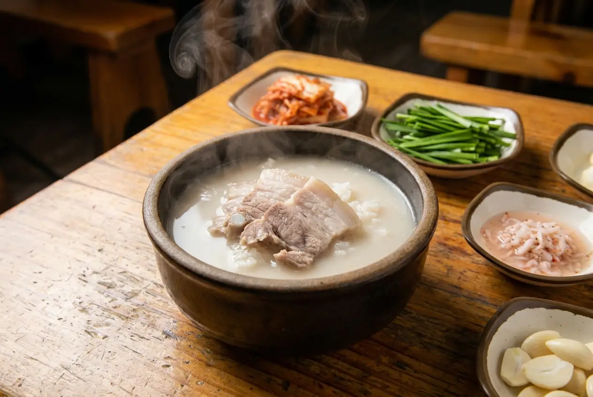
동구 방어진 조선소 인근의 아침을 여는 50년 전통의 돼지국밥 노포입니다. 육수에 밥을 여러 번 토렴하여 밥알에 뽀얗고 고소한 국물이 흠뻑 스며있으며, 머리고기와 내장을 다져 넣은 섞어국밥의 깊이가 남다릅니다.
울산 중구 병영사거리 인근의 기이한 노포입니다. 오전 8시부터 11시까지 단 3시간만 영업하며 그날 준비한 한우국밥 양이 소진되면 가차 없이 문을 닫습니다. 저렴한 가격에 믿기 힘들 정도로 부드러운 한우고기가 가득 든 장터식 국밥의 보물입니다.
울산 최대 전통시장인 신정시장 국밥골목 내에서 가장 오래된 명가 중 한 곳입니다. 돼지 머리고기를 푹 고아 낸 육수가 아주 녹진하고 구수하며, 국밥에 넣어주는 고기의 두께와 씹는 맛이 시장 인심 그대로 가득 차 있습니다.
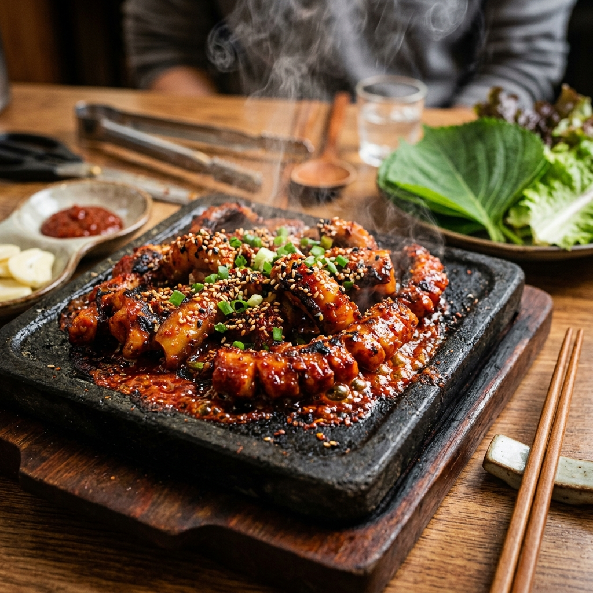
성남동 중앙시장 내 50년 넘는 역사를 지닌 곰장어 특화 골목입니다. 직화 연탄불 위에서 구워 불향이 가득 밴 담백한 소금구이와 칼칼하고 마약같은 매운 고추장 양념구이 두 갈래로 애주가들을 유혹합니다.
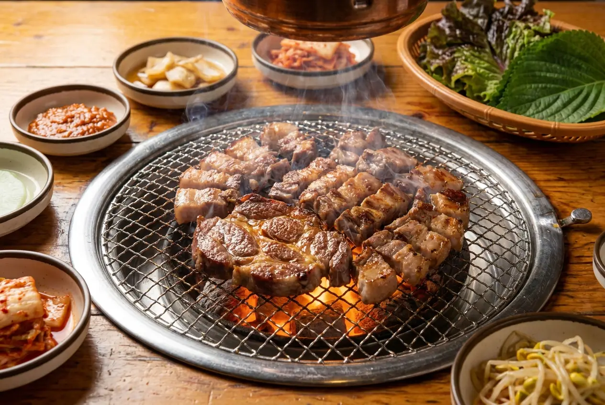
전국에서 오직 **울산 지역**에서만 볼 수 있는 독특한 로컬 소울 분식입니다. 우리가 아는 일반 쫀드기를 기름에 튀겨낸 뒤 라면 수프와 설탕을 적절히 배합해 만든 특제 가루를 범벅해서 봉지에 담아 먹는 중독성 끝판왕의 국민 간식입니다.
동해안에서 가장 해가 빨리 뜨는 간절곶의 명물 수제 디저트 빵입니다. 부드럽고 촉촉한 카스테라 번 사이에 달콤한 수제 커스터드 팥 크림이 들어있고, 아래 바닥면은 바삭하고 고소한 소보로 크럼블로 마감해 한 빵에서 세 가지 식감을 냅니다.
울산 방어진과 일산해수욕장 바닷가를 장악한 울산 토종 초대형 베이커리 카페입니다. 유기농 밀가루와 직접 배양한 천연 발효종을 사용해 정성껏 구워내는 고로케와 쌀빵, 타르트가 수십 종 진열되어 빵순이들의 필수 방앗간으로 불립니다.
성남동 중앙시장 한편에서 30년 넘게 자리를 지켜온 작고 아담한 단팥 전통 디저트 쉼터입니다. 직접 가마솥에 정성껏 국산 팥을 쑤어 올리는 옛날식 가마솥 팥빙수와 쫀득한 인절미 떡을 고명으로 얹어주는 단팥죽이 향수를 불러일으킵니다.
태화강 국가정원 먹거리단지 안에서 매일 직접 국산 콩으로 두부를 만들어 서빙하는 오랜 가마솥 두부 요리 노포입니다. 부드럽고 구수한 해물순두부와 따끈하게 데워 나오는 담백한 모두부가 고향의 맛을 연상시킵니다.
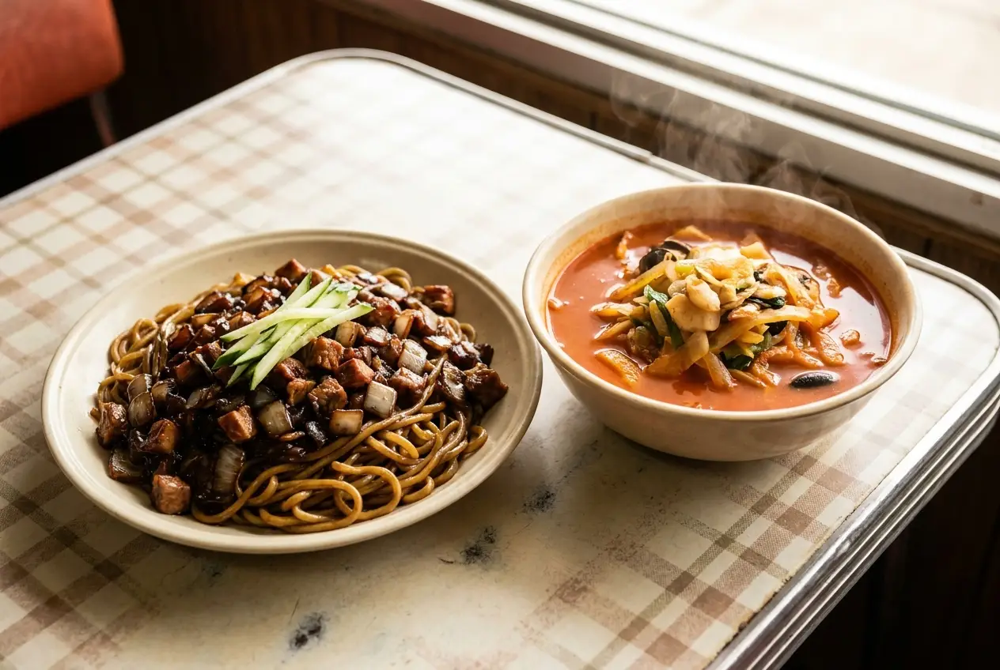
태화강 국가정원 주변 태화동 주택가 골목길에서 25년 넘는 세월 동안 매콤하고 칼칼한 삼선짬뽕으로 입소문을 모은 로컬 중식 명소입니다. 주문 즉시 센 불에 해물과 대파를 볶아 불향을 은은하게 낸 육수가 매력적입니다.
온산공단 배후 도시인 울주군 온산읍 덕신리 삼거리에 위치한 전설적인 곰탕집입니다. 새벽 5시 교대근무 전이나 야근 후 아침 퇴근길에 공단 근로자들이 뚝배기 가득 든 곰탕을 들이키며 땀방울을 식히던 서민 노포입니다.
울산 중구 병영사거리 뒤편 막창 특화거리의 시작이자 가장 굳건한 터줏대감입니다. 노릇하게 기름기를 빼며 구운 돼지막창을 비법 막장에 찍어 먹으면 바삭하고 쫄깃한 고소함이 온몸을 휘감습니다.
대를 이어 내려오는 특제 땅콩가루 함유 막장 소스로 젊은 층과 단골들에게 전폭적인 지지를 받는 병영의 또 다른 막창 영웅입니다. 부드럽게 숙성한 돼지막창의 쫄깃한 식감과 깔끔하게 손질된 내장이 강점입니다.
울산대학교 인근 무거동 주택가에 숨겨진 '생활의 달인' 인증 비빔칼국수 성지입니다. 찬물에 헹궈 탱글탱글하고 쫄깃함이 극대화된 손칼국수 면발에 상큼하고 달콤한 특제 고추장 소스 양념장이 어우러져 한 번 먹으면 중독되는 마성의 맛을 선사합니다.
울산 북구 약수동 조용한 시골길 초입에서 1995년부터 2대째 밀가루를 수제 반죽하고 밀대로 밀어 숭덩숭덩 썰어내는 전통 손칼국수 노포입니다. 평일 점심시간에도 인근 직장인과 미식가로 웨이팅이 빈번합니다.
울산 신정시장 깊은 칼국수 골목 안에서 가장 역사 깊고 저렴해 상인들과 오가는 주부들이 수십 년 단골로 머무르는 손칼국수 가게입니다. 진한 국산 멸치와 다시마로 푹 우려낸 개운한 육수에 손맛 가득 쫄깃함이 돋보입니다.
울주군 청량읍 문수산 등산로 옆 영해 저수지 자락에 자리한 야외 평상 칼국수 맛집입니다. '무라카데(먹으라 하데)'라는 구수한 방언 이름처럼, 아름다운 자연 바람과 저수지 풍경을 온몸으로 마주하며 식사할 수 있는 최고의 힐링 성지입니다.
성남동 젊음의거리 옆 중앙시장 닭전골목에서 40년이 넘는 기나긴 역사를 간직한 울산 대표 통닭 노포입니다. 옛날식 검은 가마솥에 기름을 가득 붓고 튀겨내어 껍질이 과자처럼 바삭하고, 반죽에 입힌 은은한 카레 향이 침샘을 끊임없이 저격합니다.
계원닭집과 어깨를 나란히 하며 성남동 중앙시장 닭전골목을 수십 년째 수호하고 있는 옛날통닭의 전설입니다. 겉바속촉 가마솥 후라이드와 함께 이 집만의 알싸하고 은은한 단맛이 도는 마늘 양념소스가 가득 묻어 나오는 양념치킨이 별미입니다.
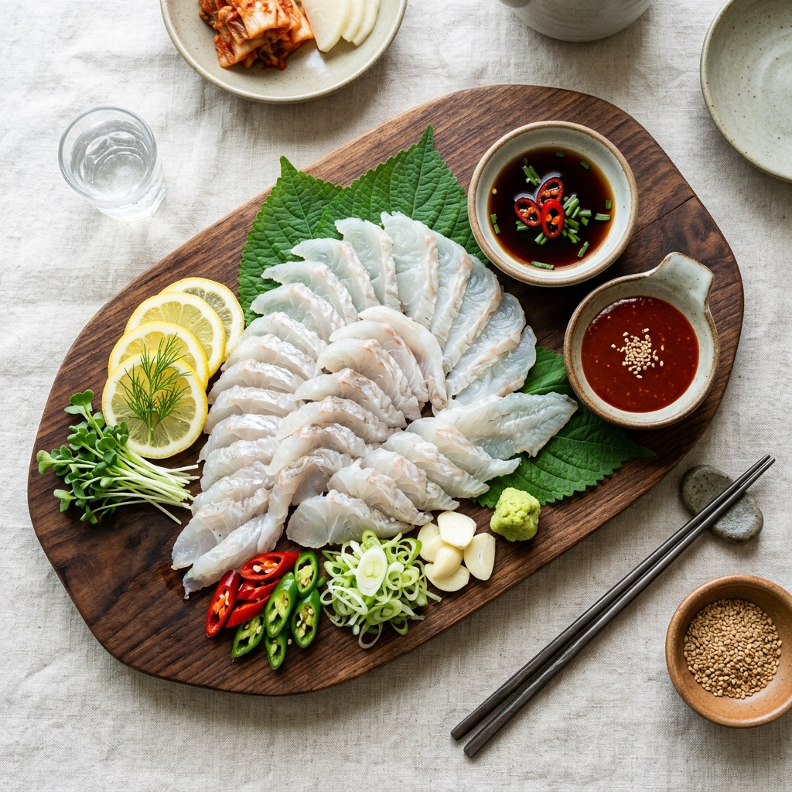
울산 남구 삼산동 먹자거리에 위치한 중소벤처기업부 인증 **백년가게** 참가자미 전문 횟집입니다. 양식이 전혀 불가능한 동해 참가자미를 정교하게 뼈째 썰어낸(세꼬시) 회로, 고소하고 쫄깃하여 씹을수록 깊은 단맛이 올라옵니다.
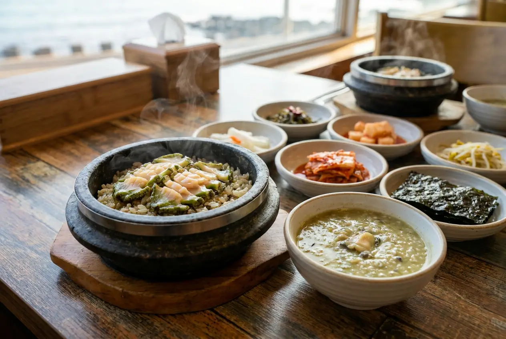
주전 몽돌 해변가에서 실제 물질하시는 울산 해녀 할머니들이 물질해 올린 성게와 소라를 즉석에서 까서 파는 야외 포장마차 매장입니다. 파도 소리와 몽돌 구르는 소리를 들으며 맛보는 자연산 신선함이 극치입니다.
동구 미포조선과 현대중공업 조선소 조선공들이 퇴근 후나 점심때 들르는 레전드 밥집입니다. 무와 감자를 두툼하게 썰어 넣고 살아있는 신선한 가자미를 자작하고 칼칼하게 졸여 낸 가자미찌개는 묵직하고 시원해 밥도둑으로 불립니다.
방어진 동쪽 끝자락 등대섬인 슬도(Seuldo) 초입 포구에 숨겨진 현지인 아지트 밥집입니다. 칼칼하게 청양고추와 고춧가루를 팍팍 풀어 넣고 토막 낸 참가자미와 무를 조려 낸 매콤한 가자미찌개가 명물입니다.
일산해수욕장 바닷가 방파제 근처에서 30년 넘게 영업해 온 신선한 로컬 횟집입니다. 관광지 초장집들과 달리 가성비가 매우 훌륭하며, 갓 잡아 썰어오는 광어, 우럭과 철철이 다른 제철 뼈째회(세꼬시) 물회가 유독 인기입니다.
울산 삼산동 뒤편에 위치한, 울산 전체를 통틀어 사실상 유일하게 제대로 된 평양냉면을 자가제면하여 내는 냉면 성지입니다. 육향이 은은하고 맑게 퍼지는 차가운 육수에 메밀 함량 높은 툭툭 끊기는 면발의 완성도가 서울 유명 면옥 못지않습니다.
울산 북구 정자항 부두 끝자락에 위치하여 포구 선원들과 로컬 주민들이 가성비 좋게 활어회를 푸짐히 맛보기 위해 찾아가는 진짜 로컬 횟집입니다. 갓 들여온 자연산 참가자미와 꼬들꼬들한 잡어 세꼬시가 시그니처입니다.
울주군 서생면 진하해수욕장과 야경 명소인 명선도 바다 경치를 한눈에 조망할 수 있는 해안가 대표 횟집입니다. 동해에서 갓 건져 올린 자연산 농어, 광어와 철마다 다른 꼬들꼬들한 제철 횟감을 제공합니다.
방어진 동쪽 끝 슬도 등대 방파제 포구 입구에서 동해 물질하시는 해녀 어머님들이 직접 차려내는 포장마차 낭만 쉼터입니다. 해녀들이 당일 건져 올린 단단하고 꼬들꼬들한 뿔소라 회와 연탄 석쇠 위에 구워내는 고소한 소라구이가 최고의 낭만을 선사합니다.
동해에서 가장 해가 빨리 뜨는 간절곶 언덕 너머 해안길에 위치한 시원하고 상큼한 물회 전문점입니다. 양념을 잘게 썬 배 슬라이스와 함께 오이, 미나리를 매콤하고 시원한 살얼음 양념 육수에 말아 참가자미 횟감과 즐기는 맛이 아주 개운합니다.
북구 정자항 포구 부둣가에서 동해 해녀들이 즉석에서 잡은 전복, 소라, 키조개 등 싱싱한 조개류를 즉시 손질해 2층 테이블에서 먹을 수 있도록 중개하는 투박하고 정겨운 초장집입니다. 바다 향을 온전히 품은 자연산 해물의 식감이 강점입니다.
동구 방어진 꽃바위 해안도로 끝자락에 위치해 현대중공업 조선소 임원들과 협력업체 외빈 접대용 최고급 비즈니스 횟집으로 명성 높은 곳입니다. 구하기 힘든 자연산 명품 줄가자미(이시가리)와 참돔 코스가 시그니처입니다.
일산해수욕장 입구 초입의 숨겨진 로컬 맛집으로, 향긋한 미나리와 아삭아삭한 콩나물이 매콤하고 걸쭉한 비법 전분 양념 소스에 쫄깃한 생아구살과 버무려져 밥 두 그릇을 부르는 대표 찜 명가입니다.
울주군 범서읍 선바위 뒤편 태화강 상류 맑은 계곡 옆에서 메기와 민물고기를 진하게 끓여내는 칼칼한 매운탕 전문 노포입니다. 흙냄새나 잡내가 전혀 없고 들깨가루와 제피(초피) 향이 어우러져 깊고 진한 맛을 선사합니다.
중구 성남동 한옥 보존구역 내에서 오랜 세월을 지켜온 울산 대표 한식 **백년가게**입니다. 고즈넉한 한옥집 안방에서 차려내오는 정갈하고 삼삼한 영양 한우 불고기 석쇠구이 정식과 토속적인 된장찌개, 전통 밑반찬들이 품격을 느끼게 합니다.
남구 신정동/옥동 인근에서 35년 넘는 세월 동안 고풍스럽고 묵직하게 정통 중화 코스요리를 대접해 온 명문 **백년가게**입니다. 울산 고위층이나 주요 인사들의 모임 장소로 빈번히 활용되는 고급스러운 코스 요리와 딤섬이 강점입니다.
울산 남구 신정동에서 30년 넘게 자리를 지키며, 최상급의 한우 암소 등심과 갈비살을 정직한 식육식당 가격에 대접해 온 중기부 공인 **백년가게**입니다. 투박한 정육 식당 분위기에서 한우 생고기 본연의 풍미를 온전히 느낄 수 있습니다.
울산 남구 법조타운/관공서 근처에서 격조 높게 회정식 코스요리를 대접해 온 30년 역사의 유서 깊은 **백년가게**입니다. 모든 좌석이 프라이빗한 개별 룸으로 구성되어 있으며, 아주 정갈하고 얇게 뜬 흰 살 생선회와 묵직한 일식 요리가 특징입니다.
울산 언양전통시장 입구에서 40년이 넘는 세월 동안 매일 신선한 언양 한우 암소만을 직접 발골 및 손질하여 판매해 온 명품 육류 매장이자 **백년가게**입니다. 현지 고기 매니아들이 마블링 좋은 선물용 쇠고기나 캠핑용 고기를 구입할 때 가장 신뢰하는 곳입니다.
1924년에 개업하여 무려 100년이 넘는 긴 세월 동안 4대째 가업을 고스란히 잇고 있는 울산 전통 **육회비빔밥**의 정수이자 한국 외식업계의 보물 같은 백년가게입니다. 놋그릇 위에 정갈하게 담겨 나오는 삼삼하고 깊은 비빔밥이 특징입니다.
동구 현대중공업 조선소 앞 전하동 골목에서 조선소 용접공과 근로자들이 땀 흘린 후 들러 든든하게 곱빼기 짜장과 칼칼한 짬뽕을 들이키며 하루 피로를 씻어내던 향수 가득한 백년 노포 중식당입니다.
남구 삼산동 한편에서 30년 넘게 매콤달콤하고 자글자글한 낙곱새(낙지+곱창+새우) 전골 하나로 직장인들의 점심시간을 도맡아 온 노포 밥집입니다. 무쇠 전골판 위에서 비법 고춧가루 양념장으로 자작하게 조려냅니다.
남구 달동 주택가 뒤편에서 30년 넘는 기나긴 세월 동안 동네 사랑방 중식당으로 묵묵히 명맥을 이어온 백년노포 중식의 자존심입니다. 면발의 탄력이 극도로 뛰어나며 텁텁하지 않고 담백 시원한 불 짬뽕 육수가 압권입니다.
울산광역시 제1호 민간정원으로 공식 지정된 온실 테마 식물원 카페입니다. 따뜻한 난대식물 유리온실과 푸른 소나무 산책로가 어우러져 계절에 상관없이 일 년 내내 푸른 조경과 싱그러운 숲의 피톤치드를 만끽할 수 있는 도심 속 식물원 감성을 선사합니다.
울산 도심 속 건물 옥상 위에 꾸며진 이색적인 옥상정원입니다. 구암문구 삼산본점 7층 옥상정원 카페로, 도심 한복판에서 잠시 시끄러움을 잊고 바람을 쐬며 녹음을 즐길 수 있도록 정성껏 가꿔진 공간입니다.
울산의 명산 중 하나인 대운산 산자락 아래 위치한 드넓은 야외 문화 정원입니다. 아름답고 드넓은 야외 잔디밭, 동양적인 석가산 인공 바위 조형물, 잘 가꿔진 분재와 다양한 예술 조각상이 정원 곳곳에 어우러져 한 편의 야외 미술관을 보는 듯한 깊은 맛을 줍니다.
울주군 두동면에 평화롭게 안겨 있는 유럽식 조경 정원입니다. 봄부터 겨울까지 사계절에 구애받지 않고 피어나는 신비로운 야생화와 아기자기한 도자기 예술 소품들이 조화를 이루어, 향긋한 자연 속 힐링을 주는 친환경 정원 카페입니다.
울주군 범서읍 호젓한 산자락 아래 위치한 명품 소나무와 거대한 기암괴석이 조화를 이루는 전통 한옥 정원입니다. 웅장하게 서 있는 전통 소나무들과 묵직한 돌 조경이 어우러져 동양적인 전통미와 수려한 위용을 온전히 선사합니다.
북구 신천동 숲길 속에 그림처럼 들어선 전통 한옥 대청마루와 고즈넉한 하늘 연못이 아름답게 조화를 이루는 동양풍 연못 정원입니다. 정자 대청에 앉아 연못에 비친 푸른 하늘과 정원 변 들꽃을 조용히 바라보며 물멍하기 좋은 고요한 안식처입니다.
울주군 두동면 조용한 산골 어귀에 예쁘게 안겨 있는 정겨운 영국식 작은 오두막 정원(코티지 가든) 감성의 정원입니다. 형형색색의 조경수와 아기자기하고 빈티지한 서양식 야생화, 귀여운 나무 울타리가 어우러져 한 편의 동화 속 나라를 보여줍니다.
태화강 상류 수려한 물줄기 비경과 마주하고 있는 수변 자연 융합형 정원 식당입니다. 강바람을 쐬며 들풀과 야생화가 펼쳐진 강변 정원길을 산책하고 정갈한 차와 보양 한식을 즐길 수 있습니다.
중구 성안동 산기슭 울창한 숲속 그늘에 조용히 묻혀 있는 숲속 자연주의 정원 카페입니다. 기존의 소나무와 참나무들을 인위적으로 훼손하지 않고, 숲의 자연스러운 경사면 지형을 살려 숲 전체를 하나의 아름다운 정원으로 완성했습니다.
곧 맛집들과 공식 제휴를 통해 “연라이프 울산 소개 보고 왔어요” 인증 시 서비스(음료 등)나 소소한 할인 혜택을 받으실 수 있도록 조율 중입니다. 지금은 어떠한 대가 없이 검증된 정보만 정직하게 알려드립니다.
가게 등록 및 제휴 신청 →아래 양식을 입력해 주시면, 검토 후 연라이프 울산 미식 가이드에 등록해 드립니다.
기획자 연소사가 검토 후 영업일 기준 3일 내 연락드리겠습니다.
신청해주셔서 대단히 감사드립니다.
잘 안 되면 메일로 직접 보내기 · 전달된 정보는 안전하게 보관됩니다.